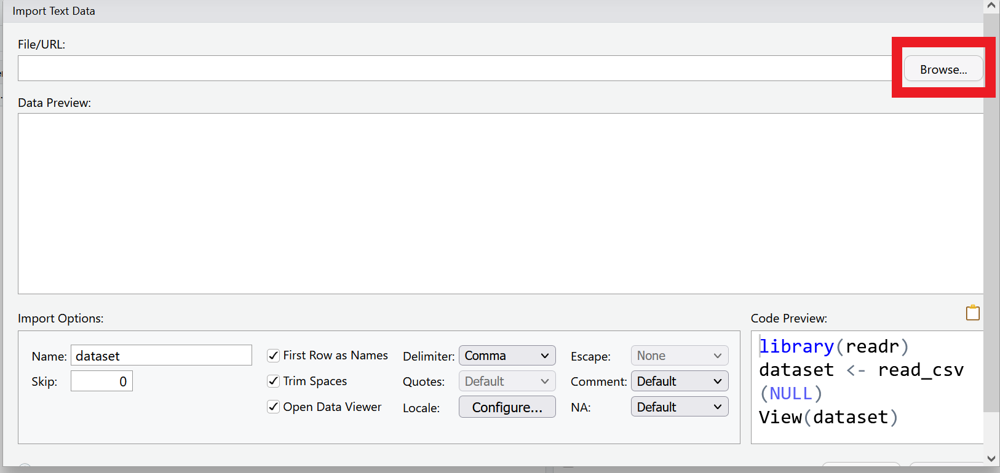
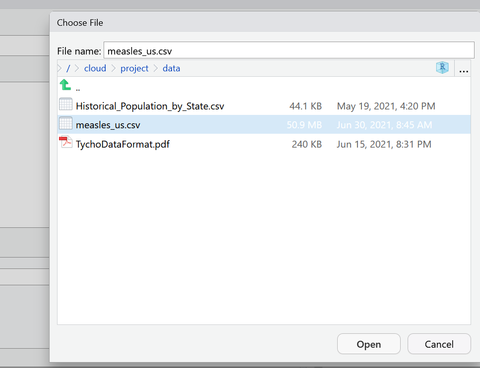
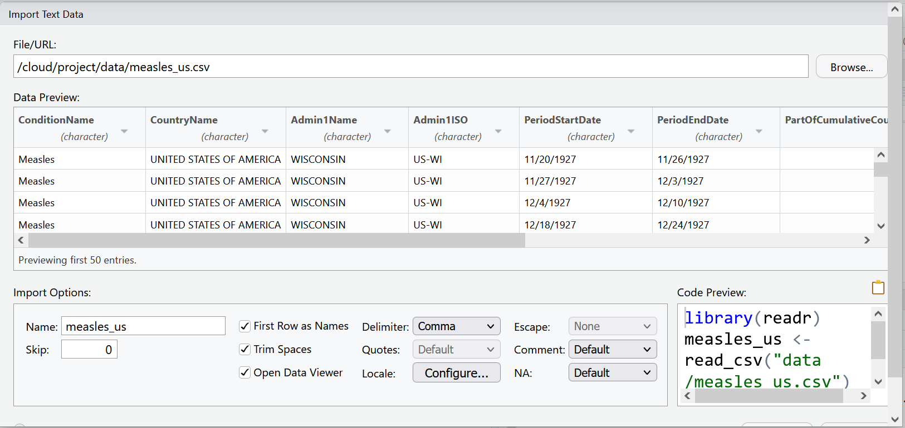

Chapter 3 Welcome to the Tidyverse
In this lesson and the next, we will be using a group of packages which are part of what is known as the tidyverse - “an opinionated collection of R packages designed for data science. All packages share an underlying design philosophy, grammar, and data structures.”6, developed by Hadley Wickham.
These packages include :
readrfor importing data into Rdplyrfor handling common data wrangling tasks for tabular datatidyrwhich enables you to swiftly convert between different data formats (long vs. wide) for plotting and analysislubridatefor working with datesggplot2for visualizing data (we’ll explore this package in the next chapter).
For the full list of tidyverse packages and documentation visit tidyverse.org You can install these packages individually, or you can install the entire tidyverse in one go.
3.1 What is Tidy Data?
Data is considered “tidy” if it follows three rules:
- Each column is a variable
- Each row is an observation
- Each cell is a single value7
Data “in the wild” often isn’t tidy, but the tidyverse packages can help you create and analyze tidy datasets.
3.2 Getting set up
- Sign in to RStudio Cloud (Or, if you haven’t already, sign up for a free account at RStudio Cloud https://rstudio.cloud/plans/free)
- Go to the RStudio Cloud class project for this session https://rstudio.cloud/project/4260029
- Note the text that marks this as a Temporary Copy. Select the
Save a Permanent Copybutton to begin working!
- Note the text that marks this as a Temporary Copy. Select the
- Create a new script called
measles_script.R
Reminder: You can open a new R script in the following ways:
1. Go to the menu bar File > New File > R Script
2. In the toolbar below the menu bar, select the new blank file icon, and then R Script from the menu bar.
3. In the Files pane, select the New Blank File Icon, and then R Script
4. Use the keyboard shortcut Ctrl+Shift+N (PC) or Shift+Command+N(Mac)
3.3 Install
First we are going to use install.packages() to install tidyverse, if you haven’t already. Then we are going to load tidyverse with the library() function. You only need to install a package once, but you will load it each time you start a new r session. To learn more about dplyr and tidyr after the workshop, you may want to check out this handy data transformation with dplyr cheatsheet and this one about tidyr.
#install tidyverse if you haven't yet
#install.packages("tidyverse")
#load tidyverse
library(tidyverse)## ── Attaching packages ─────────────────────────────────────── tidyverse 1.3.1 ──## ✔ ggplot2 3.3.6 ✔ purrr 0.3.4
## ✔ tibble 3.1.7 ✔ dplyr 1.0.9
## ✔ tidyr 1.2.0 ✔ stringr 1.4.0
## ✔ readr 2.1.2 ✔ forcats 0.5.1## ── Conflicts ────────────────────────────────────────── tidyverse_conflicts() ──
## ✖ dplyr::filter() masks stats::filter()
## ✖ dplyr::lag() masks stats::lag()3.4 The Data
For this lesson we will be using data which comes from Project Tycho - an open data project from the University of Pittsburgh which provides standardized datasets on numerous diseases to aid global health research.
Throughout this lesson, we will be using a dataset from Project Tycho featuring historical counts of measles cases in the U.S.. We want to clean and present this data in a way that makes it easy to see how measles cases fluctuated over time. In the next lesson, we’ll start visualizing this cleaned up data.
A useful feature of Project Tycho data is their use of a common set of variables. Read more about their data format.
3.5 Importing data
Now let’s import the data we’ll be working with. You can import data with code, or you can use RStudio’s GUI. Let’s look at both.
In the environment pane, select the button that says Import Dataset and choose the option From text (readr). This means we are going to be using the readr package, which is part of the tidyverse to read a file.

Select Browse in the dialog box that opens, and navigate to your data folder and choose the file called measles_us.csv
 
A new window will open with a spreadsheet view of the data. We can use this window to make some choices about how the data is imported.

RStudio will use the file name as the default name for your dataset, but you could change it to whatever you want. In this case measles_us works pretty well.
RStudio will also try to guess the data type of your columns. It will mostly get it right, but it is not unusual that you will manually need to tell it what data type certain columns are.
For example, let’s look at the columns PeriodStartDate and PeriodEndDate. These columns contain dates, but RStudio wants to read them as character data. This is very common when importing data. Let’s change the first column PeriodStartDate to the date data type, by using the drop down menu to select date data. We’ll learn another way to change data types later in this lesson and take care of PeriodEndDate then.

You will be asked to confirm that the input format of the date is %m/%d/%Y which is like writing mm/dd/YYYY. The program needs to know what the correct input date is so it can return the right output date YYYY-mm-dd, the international standard date format.

Now our data is ready to import. We can select the import button. As you may have noticed, the code behind this import dialog box is also being generated.
We can find the code in our History pane. Highlight the line of code and use the To Source button to add it to the script.
So what does all this code actually mean?
We are using a function from the readr package called read_csv(). This function takes as an argument the path to where the file is located. This can take the form of an absolute path, a relative path to the working directory, or a url. The col_types argument lets you specify the data type by column name.
library(readr)
measles_us <- read_csv(
"data/measles_us.csv",
col_types = cols(
PeriodStartDate = col_date(format = "%m/%d/%Y")))3.6 Exploring Data
After reading the data, you will typically want to start exploring it. There are several ways of doing this. Let’s review some ways of exploring data that we learned in the last chapter. View() opens the data as a file in your documents pane.
View(measles_us)Use summary() to look at each column
summary(measles_us)## ConditionName ConditionSNOMED PathogenName CountryName
## Length:422051 Min. :14189004 Length:422051 Length:422051
## Class :character 1st Qu.:14189004 Class :character Class :character
## Mode :character Median :14189004 Mode :character Mode :character
## Mean :14189004
## 3rd Qu.:14189004
## Max. :14189004
## CountryISO Admin1Name Admin1ISO Admin2Name
## Length:422051 Length:422051 Length:422051 Length:422051
## Class :character Class :character Class :character Class :character
## Mode :character Mode :character Mode :character Mode :character
##
##
##
## CityName PeriodStartDate PeriodEndDate
## Length:422051 Min. :1906-09-16 Length:422051
## Class :character 1st Qu.:1926-09-12 Class :character
## Mode :character Median :1940-04-07 Mode :character
## Mean :1946-02-24
## 3rd Qu.:1966-03-06
## Max. :2001-12-30
## PartOfCumulativeCountSeries DiagnosisCertainty SourceName
## Min. :0.0 Mode:logical Length:422051
## 1st Qu.:0.0 NA's:422051 Class :character
## Median :0.0 Mode :character
## Mean :0.2
## 3rd Qu.:0.0
## Max. :1.0
## CountValue
## Min. : 0.0
## 1st Qu.: 1.0
## Median : 6.0
## Mean : 136.5
## 3rd Qu.: 41.0
## Max. :53008.0You can look at the beginning of your dataset with head().
head(measles_us)## # A tibble: 6 × 15
## ConditionName ConditionSNOMED PathogenName CountryName CountryISO Admin1Name
## <chr> <dbl> <chr> <chr> <chr> <chr>
## 1 Measles 14189004 Measles virus UNITED STAT… US WISCONSIN
## 2 Measles 14189004 Measles virus UNITED STAT… US WISCONSIN
## 3 Measles 14189004 Measles virus UNITED STAT… US WISCONSIN
## 4 Measles 14189004 Measles virus UNITED STAT… US WISCONSIN
## 5 Measles 14189004 Measles virus UNITED STAT… US WISCONSIN
## 6 Measles 14189004 Measles virus UNITED STAT… US WISCONSIN
## # … with 9 more variables: Admin1ISO <chr>, Admin2Name <chr>, CityName <chr>,
## # PeriodStartDate <date>, PeriodEndDate <chr>,
## # PartOfCumulativeCountSeries <dbl>, DiagnosisCertainty <lgl>,
## # SourceName <chr>, CountValue <dbl>or the end of your dataset with tail()
tail(measles_us)## # A tibble: 6 × 15
## ConditionName ConditionSNOMED PathogenName CountryName CountryISO Admin1Name
## <chr> <dbl> <chr> <chr> <chr> <chr>
## 1 Measles 14189004 Measles virus UNITED STAT… US NORTHERN …
## 2 Measles 14189004 Measles virus UNITED STAT… US NORTHERN …
## 3 Measles 14189004 Measles virus UNITED STAT… US NORTHERN …
## 4 Measles 14189004 Measles virus UNITED STAT… US NORTHERN …
## 5 Measles 14189004 Measles virus UNITED STAT… US NORTHERN …
## 6 Measles 14189004 Measles virus UNITED STAT… US NORTHERN …
## # … with 9 more variables: Admin1ISO <chr>, Admin2Name <chr>, CityName <chr>,
## # PeriodStartDate <date>, PeriodEndDate <chr>,
## # PartOfCumulativeCountSeries <dbl>, DiagnosisCertainty <lgl>,
## # SourceName <chr>, CountValue <dbl>Notice that this prints out the first and last 6 rows of your data frame to the console in what is called a tibble. A tibble is a form of data frame that is particular to the tidyverse. The differences rest mainly it how it reads and displays data, but for the purposes of this class we will use the terms somewhat interchangeably. The tibble printed from head() and tail() will only print as many columns as can fit on the width of your monitor.
The glimpse() function which is part of the tidyverse package tibble, lets you see the column names and data types clearly.
#summary of columns and first few entries
glimpse(measles_us)## Rows: 422,051
## Columns: 15
## $ ConditionName <chr> "Measles", "Measles", "Measles", "Measles"…
## $ ConditionSNOMED <dbl> 14189004, 14189004, 14189004, 14189004, 14…
## $ PathogenName <chr> "Measles virus", "Measles virus", "Measles…
## $ CountryName <chr> "UNITED STATES OF AMERICA", "UNITED STATES…
## $ CountryISO <chr> "US", "US", "US", "US", "US", "US", "US", …
## $ Admin1Name <chr> "WISCONSIN", "WISCONSIN", "WISCONSIN", "WI…
## $ Admin1ISO <chr> "US-WI", "US-WI", "US-WI", "US-WI", "US-WI…
## $ Admin2Name <chr> NA, NA, NA, NA, NA, NA, NA, NA, NA, NA, NA…
## $ CityName <chr> NA, NA, NA, NA, NA, NA, NA, NA, NA, NA, NA…
## $ PeriodStartDate <date> 1927-11-20, 1927-11-27, 1927-12-04, 1927-…
## $ PeriodEndDate <chr> "11/26/1927", "12/3/1927", "12/10/1927", "…
## $ PartOfCumulativeCountSeries <dbl> 0, 0, 0, 0, 0, 0, 0, 0, 0, 0, 0, 0, 0, 0, …
## $ DiagnosisCertainty <lgl> NA, NA, NA, NA, NA, NA, NA, NA, NA, NA, NA…
## $ SourceName <chr> "US Nationally Notifiable Disease Surveill…
## $ CountValue <dbl> 85, 120, 84, 106, 39, 45, 28, 140, 48, 85,…Some of our variables only have one value. For example ConditionName is always going to be “Measles” and CountryName is always going to be “UNITED STATES OF AMERICA”, because this dataset is a dataset of measles case counts in the US. But you don’t have to take my word for it! Let’s use some tools to explore distinct values. First the dplyr function distinct() will print all the distinct values in a given column.
distinct(measles_us, ConditionName)## # A tibble: 1 × 1
## ConditionName
## <chr>
## 1 MeaslesAs expected, we have only one distinct value in this column.
To contrast, let’s run distinct() on Admin1Name.
distinct(measles_us, Admin1Name)## # A tibble: 56 × 1
## Admin1Name
## <chr>
## 1 WISCONSIN
## 2 OHIO
## 3 MICHIGAN
## 4 NEVADA
## 5 NEW JERSEY
## 6 WASHINGTON
## 7 DELAWARE
## 8 KENTUCKY
## 9 WYOMING
## 10 INDIANA
## # … with 46 more rowsNow we get a clearer idea that this column contains names of US states and territories.
We might want, not just the distinct values, but also counts of how often each distinct value occurs. For that we can use count()
count(measles_us, Admin1Name)## # A tibble: 56 × 2
## Admin1Name n
## <chr> <int>
## 1 ALABAMA 7458
## 2 ALASKA 1869
## 3 AMERICAN SAMOA 118
## 4 ARIZONA 4685
## 5 ARKANSAS 5643
## 6 CALIFORNIA 14354
## 7 COLORADO 8042
## 8 CONNECTICUT 10816
## 9 DELAWARE 4507
## 10 DISTRICT OF COLUMBIA 5027
## # … with 46 more rows3.6.1 Challenge
- Test out
distinct()with a few other columns inmeasles_us. unique()andtable()are two base R functions that work similarly todistinct()andcount(). Try runningunique(measles_us$Admin1Name)andtable(measles_us$Admin1Name). How do the results differ fromdistinct()andcount()? Which do you prefer?- Try to run
unique()andtable()on a few more variables in measles_us()
read more about tidy data https://cran.r-project.org/web/packages/tidyr/vignettes/tidy-data.html↩︎